Pontos turísticos de Bento Gonçalves!
Conhecer as belezas dos Caminhos de Pedra!
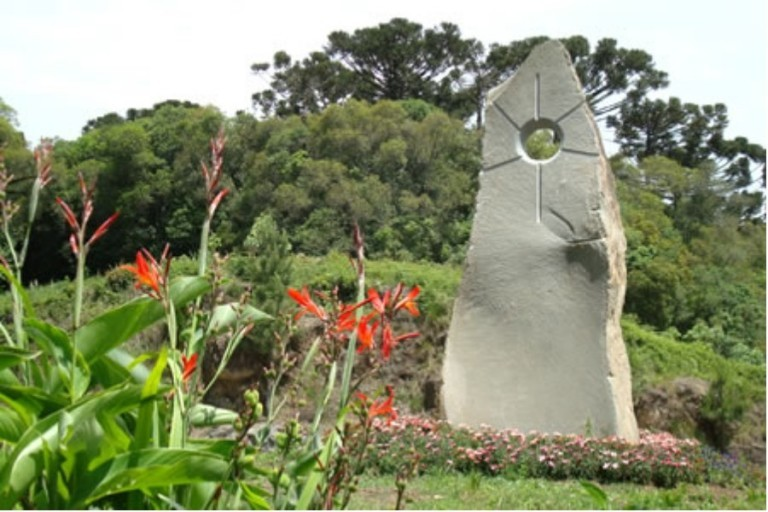 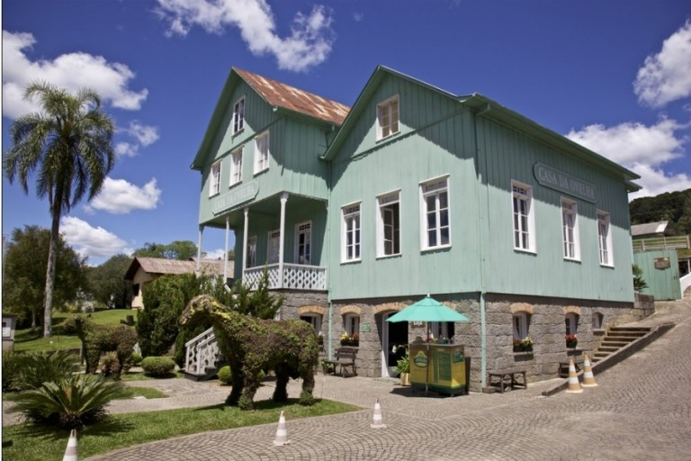 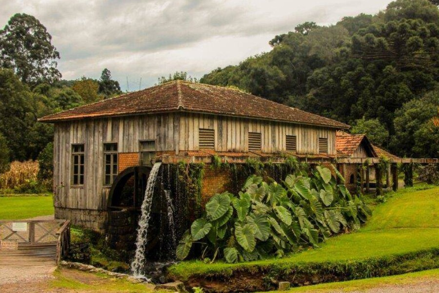 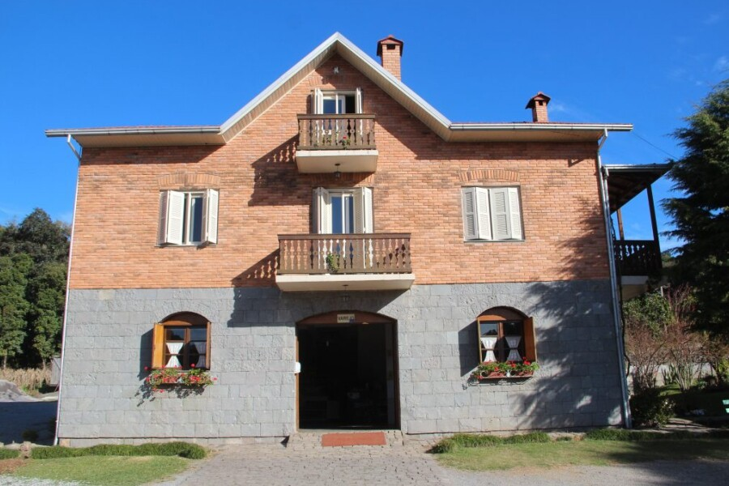Um dos principais pontos turísticos de Bento, são os caminhos de Pedra. Eles trazem a arquitetura do imigrante conservada através do tempo, que resgata o passado e tem o objetivo de valorizar e preservar os costumes dos imigrantes italianos. Os Caminhos de Pedra são reconhecidos como Patrimônio Cultural do Rio Grande do Sul desde 2009 por concentrar o maior acervo de arquitetura italiana em meio rural do Brasil.
Possui 12km de extensão e passa por atrações culturais e gastronômicas como: a Casa da Erva Mate, Casa das Massas e do Artesanato, Casa do Tomate, Parque da Ovelha, entre outros.
Mais informações podem ser encontradas aqui!
Vale dos Vinhedos!
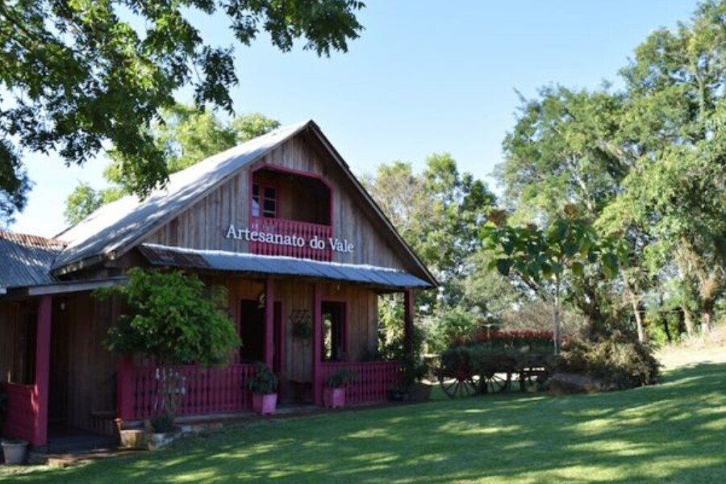 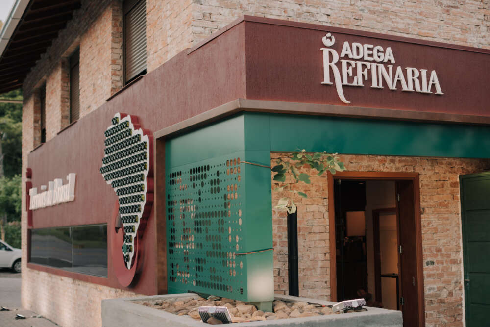 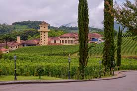 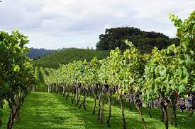Esse ponto turístico representa o legado histórico, gastronômico e cultural dos italianos que aqui chegaram em 1875.
Os Vales são cobertos por parreirais e paisagens apaixonantes de diferentes tonalidades nas quatro estações do ano. Ao longo de um roteiro encantador, é possível visitar pequenas propriedades rurais, vinícolas familiares e de renome internacional, hotéis, pousadas, restaurantes, entre outros locais que ressaltam a gastronomia, o artesanato e as belezas desta terra.
Mais sobre o Vale dos Vinhedos!
Passeio de Maria Fumaça!
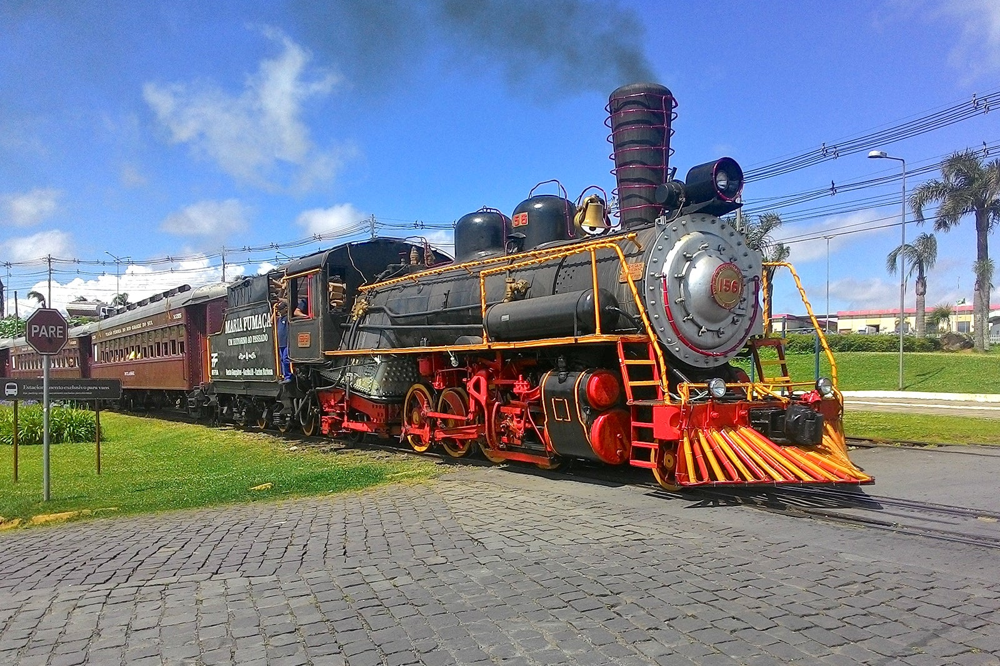 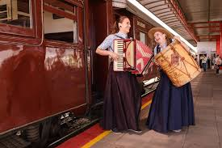 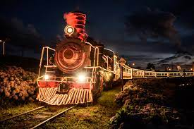 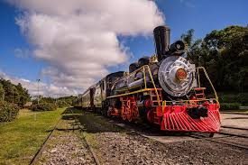A famosa linha ferroviária da Serra Gaúcha é uma viagem no tempo, relembrando histórias dos italianos colonizaram essas provas.
Com 23km de extensão a atração passa por três cidades (Bento Gonçalves, Garibaldi e Carlos Barbosa). O percurso dura, em média, 90 minutos e dentro dos vagões são feitas apresentações artísticas de música Italiana e Gaúcha. Além disso, durante o passeio, ocorre a degustaçã de Vinhos, Sucos de Uva e Espumantes.
O passeio pode ser feito durante todo o ano, variando horários e dias entre a baiza e alta temporada.
Garanta essa esperiência inesqueível aqui!
Viaje no tempo com a Epopeia Italiana!
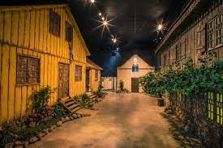 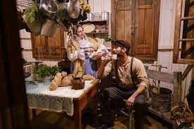 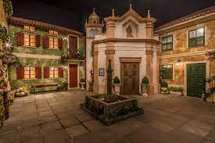
Neste espetáculo você vai conhecer a hitória de Lázaro e Rosa, imigrantes italianos que, com muitas dificuldades, chegaram ao Brasil e com muito sacrifício coseguiram prosperar em terras gaúchas.
O espetáculo possui 9 senários, onde o espectador é levado por um guia para conhecer réplicas dos ambientes como a casa de Lázaro, o Navio que os trouxe ao Brasil e entre outros cenários criados. O espetáculo também possui degustação de biscoito colonial.
Para curtir essa experiência, agende uma data!
Um Pouco da História de Bento Gonçalves!
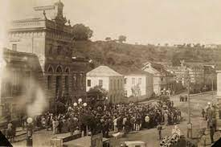 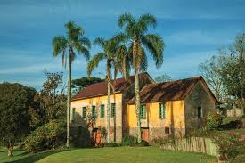 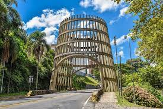 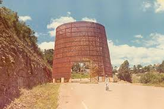Colônia Dona Isabel - A Origem
Moacyr Flores, em seu livro, "História do Rio Grande do Sul", explana que no ano de 1859 foi proibida a imigração para as zonas cafeeiras do Brasil, fazendo assim com que o foco de imigração fossem os estados do Rio Grande do Sul, Santa Catarina e Paraná. Essa poibição fez com que os cafeicultores buscassem imigrantes italianos, aproveitando a situação de miséria que neirana nos Estados do norte da península italiana.
No ano de 1872 (segundo o livro "História do Rio Grande do Sul", de Moacyr Flores) se inicia a Colonização Italiana em nosso estado, povo este, que teve as terras da Encosta Superior do Nordeste designadas como destino. Assim, na atual região serrana, surgem duas colônias, a Conde D'Eu e Dona Isabel, esta última, originou a atual cidade de Bento Gonçalves. Ambas colônias eram caminhos dos tropeiros, os quais contribuíram muito para a formação deste povo.
Emancipação e escolha do nome
Com a prosperidade da colônia, houve a necessidade da emancipação da atual cidade de Montenegro, cujo esta, foi oficializada pelo "Acto" 474, de 11 de outubro de 1890, assinado por Cândido Costa, tornando assim independente a cidade de Bento Gonçalves!
O nome da cidade foi escolhido em homenagem ao Herói e General Farrapo Bentos Gonçalves da Silva que defendeu o lado dos rebeldes na Revolução Farroupilha.
E existem muitos outros lugares para serem visitados em Bento Gonçalves...
Dados gerais de Bento Gonçalves:
- Área territorial: 272.287 km²;
- População (Estimada): 123.090 habitantes;
- Densidade Demográfica: 280,86 hab/km²;
- Taxa de Escolaridade: 96,6%;
- IDH: 778 (Elevado);
- Mortalidade Infantil: 8,66 óbitos por mil nascidos vivos;
- PIB Per Capita: R$52.961,75;
- Prefeito (2021): Diogo Segabinazzi Siqueira;
- Gentílico: Bento-Gonçalvense.